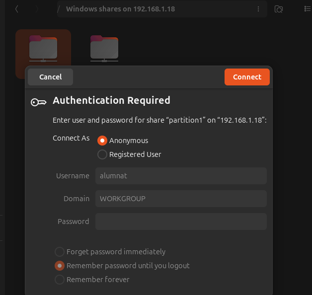

Gestió de particions i compartició de recursos
Creació i muntatge de particions
En aquest apartat aprendrem a crear particions tant en format ext4 com NTFS. També veurem com muntar particions de manera temporal i definitiva.
A més, explicarem com utilitzar FSTAB per configurar el muntatge automtic de particions. Finalment, compartirem aquestes particions utilitzant Samba i nautilus-share.
Creació de la partició i formateig
Primer de tot, comprovem el nom de la nostra partició amb la comanda fdisk -l.

Nota: En el nostre cas, el disc és
/dev/sdb(el teu pot ser diferent).
Per crear la partició, executarem la comanda següent: sudo fdisk /dev/sdb.
sudo fdisk /dev/sdb
- Escriu
nper crear una nova partició. - Selecciona
pper crear una partició primria. - Defineix la mida de la partició introduint el sector inicial i la meitat del disc, per exemple 2000000 bytes.
- Escriu
wper guardar els canvis i sortir del programa.

Comprovació de la partició
Un cop creada la partició, comprovem si s'ha creat correctament.
Formateig de particions EXT4
Amb la partició creada, procedirem a formatar-la en format ext4.
Utilitzarem la següent comanda:
sudo mkfs.ext4 -b 2048 /dev/sdb1
- L'opció
-b 2048especifica la mida del bloc que assignem manualment.
Opcions extres per a mkfs.ext4
La comanda:
mkfs.ext4 /dev/sdb1
pot incloure les opcions següents:
Opcions comunes:
-L <etiqueta>: Assigna una etiqueta a la partició (per exemple, "EXT4_PARTITION").
mkfs.ext4 -L EXT4_PARTITION /dev/sdb1-m <percentatge>: Estableix l'espai reservat per a l'usuari root (per defecte és el 5%). Utilitza un percentatge més petit per estalviar espai en particions grans.mkfs.ext4 -m 1 /dev/sdb1-b <mida-del-bloc>: Especifica la mida del bloc (per exemple, 1024, 2048 o 4096 bytes).mkfs.ext4 -b 4096 /dev/sdb1-E <característiques>: Afegeix opcions extres, com activar la inicialització lenta (lazy initialization) o commits rpids.mkfs.ext4 -E lazy_itable_init=1 /dev/sdb1-T <ús>: Optimitza per a casos d'ús específics (per exemple, small, largefile, largefile4).mkfs.ext4 -T largefile /dev/sdb1Comprovació de la mida del bloc
Fem la comprovació de la mida del bloc que hem assignat a la partició. Per fer-ho, utilitzem la següent comanda:
sudo tune2fs -l /dev/sdb1 | grep Block
Aquest és el resultat obtingut:

- Block count: Indica el nombre total de blocs que té la partició, en aquest cas, 499488 blocs.
- Block size: Mostra la mida del bloc assignada, que és 2048 bytes (2 KB).
- Blocks per group: Indica el nombre de blocs per grup, que és 16384.
Conversió a MB
La mida total del sistema de fitxers es pot calcular així:
-
Multipliquem el Block count pel Block size:
499488 blocs * 2048 bytes = 1022035968 bytes -
Convertim el resultat a megabytes:
1022035968 bytes ÷ 1024 ÷ 1024 = 974 MB
Així, la mida aproximada de la partició és 974 MB.
Formateig de particions NTFS
Hem creat una segona partició, /dev/sdb2, de 1GB al mateix disc. Aquesta partició es destinar al format NTFS.

Un cop creades les particions, les hem formatat segons els sistemes de fitxers desitjats:
- /dev/sdb1: Formatada amb ext4, un sistema de fitxers ideal per a sistemes Linux.
- /dev/sdb2: Formatada amb NTFS, un sistema de fitxers compatible amb Windows.
Hem aprofitat per formatar /dev/sdb1 amb ext4 durant el mateix procés.

Opcions extres per a mkfs.ntfs
La comanda:
mkfs.ntfs /dev/sdb2
pot incloure les opcions següents:
Opcions comunes:
-L <etiqueta>: Assigna una etiqueta a la partició (per exemple, "NTFS_PARTITION").
mkfs.ntfs -L NTFS_PARTITION /dev/sdb2-c <mida-del-clúster>: Especifica la mida del clúster (per exemple, 512, 1024, 2048, 4096 bytes, etc.).mkfs.ntfs -c 4096 /dev/sdb2--fast: Realitza un format rpid (equivalent a l'opció -Q).mkfs.ntfs --fast /dev/sdb2--force: Obliga el format encara que la partició estigui muntada o en ús.mkfs.ntfs --force /dev/sdb2-f: Activa el mode rpid, formatant la partició sense comprovar si hi ha blocs dolents.mkfs.ntfs -f /dev/sdb2Verificació
Un cop formatades, podem verificar el tipus de sistema de fitxers i el muntatge de les particions utilitzant:
lsblk -f

Muntatge temporal de la carpeta a la partició
Després, crearem una carpeta i un arxiu dins d'aquesta carpeta.

Executem la comanda següent:
sudo mount -t ext4 /dev/sdb1 /var/partition1/
Aquesta acció muntar la carpeta dins de /dev/sdb1.
Per a l'usuari no és visible, però d'aquesta manera ens assegurem que les dades no es perdin si succeeix algun problema amb el disc principal.

Exemple: Els arxius es guarden a la partició que hem muntat, però els arxius que prèviament hem creat a /partition1/ no s'han esborrat. En realitat, aquests arxius queden "ocults", ja que la carpeta /partition1/ est muntada sobre la partició /dev/sdb1. Quan desmuntem la partició, els arxius locals tornen a ser visibles.
Explicació de la captura
-
ls partition1/: Llistem el contingut del directoripartition1/. Inicialment només apareix el directorilost+found, que es crea automticament en particions formatades amb ext4. -
touch partition1/bye: Creem un fitxer buit anomenatbyedins de la carpeta muntadapartition1/. -
umount /dev/sdb1: Desmuntem la partició/dev/sdb1, fent que el contingut de la partició deixi d'estar accessible. -
ls partition1/: Tornem a llistar el contingut de la carpeta. Ara no apareix el fitxerbye, ja que aquest estava dins de la partició muntada i aquesta ja no est accessible. -
ls partition1/després de desmuntar: Aquí es mostren només els fitxers que pertanyen al directori local, fora del sistema de fitxers muntat. Quan es desmunta, el contingut de la partició queda separat del directori. Això demostra com el muntatge i desmuntatge funcionen per accedir al contingut de particions.
Nota: Tornem a muntar la carpeta amb la comanda anterior.
Comprovem que la partició existeix utilitzant la comanda df -T.

S'observa que la partició est present. Després, reiniciem la mquina per assegurar-nos que tot funciona correctament.
En fer la comprovació després del reinici, observem que la partició ja no est muntada. Això es deu al fet que la carpeta estava muntada de forma temporal i no de manera permanent.

Muntatge Permanent de la carpeta a la partició
Per fer que el muntatge sigui permanent, cal editar el fitxer /etc/fstab afegint els parmetres necessaris.

IMPORTANT! Tingues molta cura amb les modificacions en aquest fitxer, ja que un error pot fer que el sistema no arranqui. Si això succeeix, haurs d'utilitzar un Live Boot per reparar el fitxer FSTAB.
Explicació de la línia en el rectangle vermell
/dev/sdb1 /var/particio1 ext4 defaults 0 0
/dev/sdb1: Indica la partició que volem muntar (en aquest cas, sdb1)./var/particio1: El punt de muntatge, és a dir, el directori on es muntar la partició.ext4: El sistema de fitxers utilitzat per la partició.defaults: Opcions de muntatge predeterminades, que inclouen:- Lectura i escriptura (rw).
- Muntar amb permisos de l'usuari.
- Sincronització per defecte.
0 0:- El primer número (0) indica si es fa un "dump" de la partició per còpies de seguretat (0 = no fer-ho).
- El segon número (0) indica si es comprova la partició durant l'inici del sistema (0 = no comprovar).
Opcions extres que es poden afegir al FSTAB
noatime: Desactiva l'actualització de l'hora d'accés als fitxers. Millora el rendiment, especialment en discos SSD.nodiratime: Similar anoatime, però només per directoris.errors=remount-ro: En cas d'error, la partició es remunta en mode només lectura per evitar danys.sync: Escriu immediatament els canvis al disc, en lloc de mantenir-los en memòria cau.user: Permet que qualsevol usuari pugui muntar i desmuntar la partició.uid=1000,gid=1000: Assigna un identificador d'usuari i grup específic per als fitxers i directoris de la partició.acl: Activa les llistes de control d'accés per gestionar permisos avançats.noexec: Evita l'execució de fitxers binaris a la partició.nosuid: Desactiva els permisos especialssetuidisetgida la partició.ro: Muntar la partició en mode només lectura.
Aquestes opcions es poden combinar segons les necessitats, per exemple:
/dev/sdb1 /var/particio1 ext4 defaults,noatime,nosuid 0 0
Després de reiniciar el sistema, utilitzem la comanda df -T per verificar l'estat de la partició.
Podem observar que la partició es munta automticament en iniciar la sessió grcies a la configuració del fitxer /etc/fstab.

Compartició de Fitxers en Xarxa
Hi ha diverses maneres de compartir fitxers en xarxa, però en aquest exemple utilitzarem Nautilus-share i Samba.
Què significa compartir arxius en xarxa?
Compartir arxius en xarxa permet que diferents dispositius connectats a la mateixa xarxa accedeixin a fitxers o carpetes des d'un ordinador central. Això facilita l'intercanvi de dades sense necessitat de copiar fitxers manualment amb dispositius externs, com USB o discs durs. s una solució molt útil en entorns domèstics o d'oficina per col·laborar, gestionar recursos i estalviar temps.
Amb aquest procés, es poden configurar permisos perquè només usuaris específics tinguin accés, garantint la seguretat i el control sobre els fitxers.
Nautilus-Share
Hem creat una carpeta anomenada partition1 dins del directori /var/, i ara la compartirem a través de la xarxa utilitzant Nautilus.

Primer de tot, cal instal·lar Nautilus-share amb la següent comanda:
sudo apt install nautilus-share
Un cop creada la carpeta partition1, és necessari ajustar els permisos i el propietari per facilitar l'accés a altres usuaris.
-
Permisos 777:
Els permisos 777 atorguen mxima flexibilitat, ja que permeten a qualsevol usuari llegir, escriure i executar els fitxers dins de la carpeta. Aquesta configuració és útil quan es vol garantir accés total, però s'ha d'usar amb precaució, especialment en entorns on la seguretat és prioritria. -
Propietari nobody:nogroup:
Assignar nobody:nogroup com a propietari de la carpeta fa que no estigui associada a cap usuari o grup específic. Això significa que qualsevol persona que accedeixi a la xarxa podr interactuar amb els fitxers dins de la carpeta.
Nota: Aquesta configuració és adequada per a entorns on la seguretat no és una preocupació principal. En sistemes més restringits, és recomanable ajustar els permisos i propietaris segons les necessitats específiques de seguretat.

Obrir Nautilus amb permisos d'administrador:
Obrim un terminal i escrivim sudo nautilus. Esperem que s'obri l'explorador de fitxers.
Localitzar la carpeta:
Ens dirigim al directori /var/ i localitzem la carpeta partition1 que hem creat prèviament.

Opció de compartir:
Fem clic dret a la carpeta que volem compartir i seleccionem l'opció Sharing Options.

Configuració de la compartició:
Apareixer una finestra per configurar la compartició de la carpeta. Habilitem les opcions que desitgem (com "Compartir aquesta carpeta") i fem clic a Modify Share.

Accés des d'un altre dispositiu:
-
Verifiquem la IP de la nostra mquina amb la comanda
ip -a. -
Ens dirigim a un altre ordinador de la mateixa xarxa i escrivim a la barra de cerca del gestor de fitxers:
smb://la-ip-de-la-maquina/. -
Per exemple, en aquest cas:
smb://192.168.1.18/.
En fer doble clic a la carpeta partition1, se'ns demanaran credencials d'accés. Si disposem de credencials, les podem utilitzar, però com que hem configurat l'accés com a "Guest", podem seleccionar l'opció Anonymous.

Un cop connectats, ja podem crear, visualitzar i esborrar arxius i carpetes dins de partition1.

Si ens dirigim a la mquina des d'on hem compartit el fitxer, podem comprovar si s'ha creat la nova carpeta.
En efecte, la carpeta s'ha creat amb el nom del propietari "nobody:nogroup", tal com hem configurat prèviament.

Samba
¿Què és Samba?
Samba és una implementació de programari lliure del protocol SMB/CIFS (Server Message Block/Common Internet File System) que permet la compartició de fitxers, carpetes i impressores entre ordinadors que utilitzen diferents sistemes operatius, com Linux, Windows i macOS.
Samba sutilitza principalment en entorns mixtos, on cal que mquines amb Linux puguin interactuar amb sistemes Windows per compartir recursos de xarxa. s una eina clau per integrar sistemes operatius i facilitar la col·laboració en xarxes locals.
Funcions principals de Samba:
- Compartir fitxers i carpetes: Permet que ordinadors d'una xarxa accedeixin a recursos compartits, com carpetes o unitats de disc.
- Compartir impressores: Facilita l'accés a impressores configurades en altres dispositius.
-
Autenticació i permisos: Proporciona eines per gestionar usuaris, grups i permisos d'accés.
-
Integració amb Windows: Samba pot actuar com un controlador de domini per a entorns Windows, gestionant autenticacions i serveis.
Avantatges de Samba:
- Multiplataforma: Funciona en xarxes amb diversos sistemes operatius.
- Flexibilitat: Configurable per adaptar-se a diferents necessitats (compartició pública, accés restringit, etc.).
- Gratuït i de codi obert: Est disponible sense cost i amb suport duna comunitat activa.
Exemple d'ús:
Un servidor Linux amb Samba pot permetre que usuaris de Windows accedeixin a fitxers i carpetes com si es trobessin en un servidor Windows, sense necessitat de canviar el sistema operatiu o les eines utilitzades.
Nota sobre Kerberos:
En configuracions simples, Samba no requereix l'ús de Kerberos per compartir fitxers entre Linux i Windows. No obstant això, en entorns empresarials o quan es necessita integració amb Active Directory, Kerberos es fa necessari per gestionar l'autenticació segura. Això permet un accés centralitzat i segur als recursos compartits en xarxes complexes.
Instalació i Configuració del Samba.
Executem la comanda sudo apt install samba.
sudo apt install samba

Posteriorment configurem el arxiu del smb.conf i afegir les linies que tenim a continuació.
sudo nano /etc/samba/smb.conf
Explicació de la configuració en vermell al fitxer smb.conf
Aquesta configuració, dins del fitxer /etc/samba/smb.conf, defineix una carpeta compartida i els permisos associats per a la seva compartició a través de Samba. Analitzem les línies destacades en vermell:
path = /var/particio1: Especifica el camí complet al directori que es vol compartir. En aquest cas, la carpeta és/var/particio1.guest ok = yes: Permet que usuaris no autenticats (convidats) accedeixin a aquesta carpeta. Això és útil si es vol oferir un accés senzill, però s'ha d'utilitzar amb precaució en xarxes públiques.directory mask = 0755: Estableix els permisos per als directoris dins de la carpeta compartida.0755permet:- Lectura, escriptura i execució per al propietari.
- Només lectura i execució per a altres usuaris i grups.
create mask = 0644: Defineix els permisos per als fitxers que es creïn dins de la carpeta compartida.0644permet:- Lectura i escriptura per al propietari.
- Només lectura per a altres usuaris i grups.
browseable = yes: Permet que la carpeta aparegui com a visible (explorable) per als clients de xarxa. Si es posa ano, la carpeta encara es pot accedir, però no es mostrar en navegadors de xarxa.read list = diego: Defineix que l'usuaridiegoté permisos només de lectura a la carpeta compartida. Aquest usuari pot veure i obrir fitxers, però no editar-los ni crear-ne de nous.write list = diego: Afegeix l'usuaridiegoa la llista d'usuaris amb permisos d'escriptura. Aquest parmetre li permet crear, modificar i eliminar fitxers dins de la carpeta compartida.
Resum: Aquesta configuració comparteix la carpeta /var/particio1 amb els següents parmetres:
- Accés de convidats: Permès (qualsevol pot accedir).
- Permisos per defecte:
- Directoris: Lectura, escriptura i execució per al propietari.
- Fitxers: Lectura i escriptura per al propietari.
- Usuari específic (
diego): Té permisos tant de lectura com d'escriptura.
Nota: Aquesta configuració s'ha d'ajustar segons les necessitats específiques de seguretat i privadesa de la xarxa.
Compartir un directori amb Samba
Primer, crearem el directori /var/partition1/ i configurarem els permisos i el propietari per garantir que sigui accessible a tots els usuaris.
-
Creació de la carpeta:
El directori partition1/ es crear dins del directori /var/. -
Permisos 777:
Assignarem permisos 777 al directori per permetre que qualsevol usuari pugui llegir, escriure i executar fitxers dins d'aquest. - Lectura (r): Permet veure el contingut dels fitxers.
- Escriptura (w): Permet modificar o crear fitxers.
-
Execució (x): Permet accedir a directoris i executar fitxers.
-
Propietari nobody:nogroup:
Canviarem el propietari del directori a nobody:nogroup perquè no estigui associat a cap usuari o grup específic. Això garanteix que qualsevol persona pugui accedir als recursos compartits sense restriccions.

Per aquest exemple, crearem un usuari anomenat diego.
Nota: Si necessites més informació sobre com es creen usuaris, visita l'apartat de creació d'usuaris a la següent ruta:
Gestió d'usuaris: Afegir un nou usuari
Afegir l'usuari a Samba amb smbpasswd
La comanda smbpasswd -a diego s'utilitza per afegir l'usuari diego al sistema de gestió d'usuaris de Samba. Aquesta comanda permet que l'usuari pugui accedir als recursos compartits configurats a través de Samba.

Pas a pas del procés:
Assignació d'una contrasenya SMB:
- Es demana a l'administrador que introdueixi i confirmi una contrasenya per a l'usuari
diego. - Aquesta contrasenya ser utilitzada específicament per autenticar-se als recursos compartits de Samba.
Afegir l'usuari a la base de dades de Samba:
- L'usuari
diegoes registra a la base de dades d'usuaris de Samba. - Això permet que tingui accés a les carpetes compartides segons els permisos configurats al fitxer
smb.conf.
Nota: Aquest procés no afecta els permisos ni les contrasenyes del sistema Linux de l'usuari, ja que la base de dades d'usuaris de Samba és independent.
Reiniciar el servei de Samba:
Després de configurar el fitxer smb.conf, cal reiniciar els serveis de Samba perquè els canvis es facin efectius.
systemctl restart smbd: Reinicia el servei que gestiona la compartició de fitxers i autenticació dusuaris.systemctl restart nmbd: Reinicia el servei que gestiona el servei de noms i la descoberta de recursos en la xarxa.
Connexió des d'un altre ordinador:
En un altre dispositiu de la mateixa xarxa, obrim el gestor de fitxers i introduïm l'adreça IP del servidor Samba al camp de cerca, seguint aquest format:
smb://<IP_del_ordinador>
Consell: Si no saps quina és la IP del servidor, pots consultar-la executant la comanda ip -a al servidor Samba.

Introduir les credencials:
Quan es demanin credencials, introduïm el nom d'usuari i la contrasenya que hem configurat prèviament per Samba. En aquest exemple, introduïm les credencials de l'usuari Diego.

Provar la connexió:
Un cop connectats, intentem crear un fitxer o carpeta dins del recurs compartit per assegurar-nos que tenim els permisos necessaris.

Comprovació al servidor:
Tornem al servidor i comprovem que el fitxer o carpeta que hem creat est correctament desat al directori /var/particio1/.

Verificació del propietari:
En efecte, el fitxer creat té com a propietari l'usuari Diego, tal com s'ha configurat en el fitxer smb.conf.
Compartir un directori formatat amb NTFS mitjançant Samba
També és possible compartir un directori formatat amb NTFS utilitzant Samba. A continuació, es detallen els passos principals:
Crear i muntar el directori
S'ha creat un directori anomenat Windows al camí /var/Windows. A continuació, s'ha configurat l'arxiu /etc/fstab per tal de muntar automticament la partició /dev/sdb2 al directori /var/Windows durant l'arrencada del sistema.
En l'arxiu fstab, s'ha afegit la configuració adequada per a la partició NTFS, assegurant que aquesta es muntar correctament sempre que el sistema s'iniciï.

Configurar Samba per compartir el directori
Per compartir el directori Windows mitjançant Samba, s'ha editat l'arxiu /etc/samba/smb.conf per afegir una configuració específica. Aquesta configuració permet que el directori sigui visible a la xarxa, navegable i amb permisos adequats per als usuaris.
Els parmetres inclouen opcions com la visibilitat de la carpeta a la xarxa, els permisos d'escriptura i l'accés per a convidats.
Un cop realitzada aquesta configuració, s'han reiniciat els serveis de Samba perquè els canvis s'apliquin correctament.
Resum del procés
- S'ha creat la partició /dev/sdb2.
- La partició s'ha formatat amb el sistema de fitxers NTFS.
- S'ha muntat la carpeta /var/Windows a la partició /dev/sdb2.
- S'ha configurat Samba per compartir aquesta carpeta, permetent l'accés des d'altres dispositius de la xarxa.

Amb aquests passos, el directori Windows és accessible a la xarxa mitjançant Samba, amb permisos adequats per als usuaris.
Un cop configurat Samba i compartit el directori Windows, comprovem que és possible crear arxius des d'un ordinador Windows.
Creació d'arxius des de Windows
Des de l'ordinador Windows, accedim al recurs compartit i creem un fitxer per comprovar que tenim permisos d'escriptura adequats.

Verificació des de Linux
Tornem a la mquina Linux i comprovem que el fitxer creat des de Windows apareix correctament al directori /var/Windows.